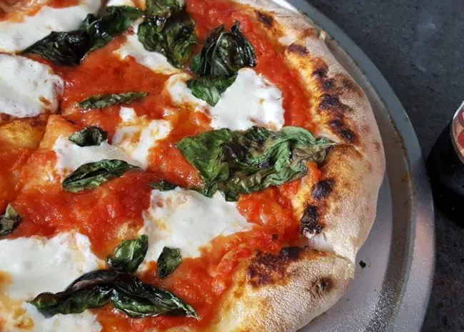

pizza

How to Make Pizza at Home That's Better Than Takeout
Pizza is a crowd-pleasing choice for busy weeknights and fun weekend dinners alike. But you don't have to rely on restaurants or takeout for top-notch pizza. Read on for tips on how to make your own pizza at home. We'll walk you through how to make pizza crust, how to top a pizza, pizza baking temperature, and how long to bake pizza.
Ingridients
dough:
- ¼ cup warm water
- 1 teaspoon active dry yeast
- 1 cup cold water
- 1 teaspoon salt
- 3 cups bread flour
- 1 tablespoon extra-virgin olive oil
toppings:
- ounces low moisture mozzarella cheese, thinly sliced
- ½ teaspoon dried oregano
- ¼ teaspoon freshly ground black pepper
- ½ cup no salt added canned crushed tomatoes
- 2 tablespoons extra-virgin olive oil
- 6 leaves fresh basil, torn
Steps
- Heat the oven.
- Form the pizza dough and place it on a peel dusted with a little flour or cornmeal.
- put the toppings on the pizza.
- Slip the pizza onto the hot pizza stone.
- After 5 minutes of baking, check the pizza.
- The pizza is done when the cheese is melted to a medium-to-dark brown.
navigation